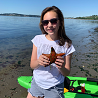
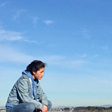
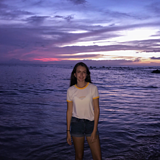
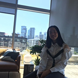

Isabella Crosby loves dogs, cheer, and the earth. She volunteers at a multitude of programs, helping those in need, and helping the environment, at an attempt to make a better world. Bella has a mass of hobbies she excels at. She participates on her highschool cheer squad, was in an honors and gifted program, and plays the cello.

Avi Tsang Jaffe loves animals and the ocean. She hopes that through Starfish she can accomplish helping the world and giving back to the earth. Avi, through her love of animals, works at a barn, taking care of cattle and horses, and teaching children how to ride. Additionally, she is ranked 12th in the USA, and travels nationally for fencing.

Xenia Capcan cares deeply for the environment. She loves design and coding, but even more she wishes that we could live without hurting the planet. Xenia exceeds educationally, receiving a 4.0GPA. Lastly, Xenia created a tik tok about turtles, bringing marine pollution awareness to an international level.

Shelley Lee has always wanted to be able to do something to help the world we inhabit and save the marine life she cares about. She hopes that through Starfish she can make a difference in the world and save the waters. Lastly Shelley plays golf at a regional level, traveling with a club team and she writes competitively.